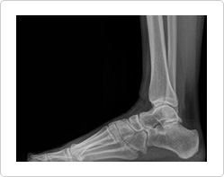

While a person is walking,the ankle receives a pressure equal to five times the bodily weight.
Ankle arthritis may occurif appropriate treatmentis not administered after the onset of the degenerative disease or
a trauma has occurred.
This is highly suspect if the patient has had an ankle injury caused by worn cartilage tissues and sore anklesbecause
of obesity.